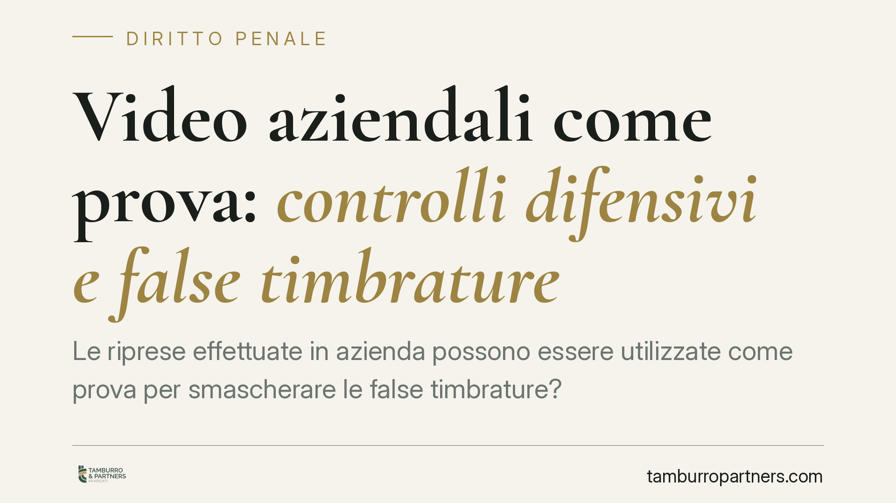

Video aziendali come prova: controlli difensivi e false timbrature
Le riprese effettuate in azienda possono essere utilizzate come prova per smascherare le false timbrature? Una recente pronuncia della Seconda Sezione penale della Cassazione torna sul tema, confermando l'utilizzabilità dei filmati acquisiti in aree di transito comune. La decisione tocca il delicato equilibrio tra potere di controllo del datore e tutela della riservatezza del lavoratore, con rilevanti ricadute pratiche.

Il caso
La vicenda riguarda alcuni lavoratori accusati di aver attestato falsamente la propria presenza in servizio. A sostegno dell'accusa, filmati ripresi da impianti collocati in aree di passaggio comune. La difesa ne contestava l'utilizzabilità, invocando la disciplina sul controllo a distanza. La Corte, nel confermare l'impianto accusatorio, ha fornito indicazioni utili tanto sul versante processuale quanto su quello sostanziale.
> Nota. Gli estremi esatti della pronuncia (numero e anno) vanno verificati sulla fonte ufficiale prima di ogni utilizzo citazionale: riportiamo qui i principi, non un riferimento numerico non controllato.
Inquadramento normativo
Sul piano processuale, le riprese audiovisive non sono una prova "nominata" dal codice. Rientrano nelle prove atipiche disciplinate dall'art. 189 c.p.p., che ne consente l'ammissione quando risultano idonee ad accertare i fatti e non pregiudicano la libertà morale della persona. Il giudice, prima di ammetterle, deve sentire le parti sulle modalità di assunzione.
Sul piano lavoristico, il riferimento è l'art. 4 dello Statuto dei lavoratori (L. 300/1970), che disciplina gli impianti dal cui funzionamento possa derivare un controllo a distanza dell'attività dei dipendenti. La giurisprudenza distingue da tempo i controlli sull'attività lavorativa — soggetti ad accordo sindacale o autorizzazione — dai cosiddetti controlli difensivi, finalizzati ad accertare condotte illecite e non la mera produttività. In quest'ultimo caso, entro limiti rigorosi, l'utilizzabilità della prova può essere ammessa anche in assenza delle procedure ordinarie.
Perché le riprese sono state ritenute utilizzabili
Il punto decisivo è la finalità e la collocazione degli impianti. Le telecamere erano installate in aree di transito comune e non erano dirette a monitorare in via continuativa la prestazione lavorativa. L'obiettivo era accertare un illecito specifico — la falsa attestazione della presenza — già sospettato. Questa combinazione colloca il caso nell'alveo del controllo difensivo, compatibile con l'uso processuale del materiale.
Resta fermo che si tratta di un equilibrio da verificare caso per caso: aree, modalità, proporzionalità e informativa incidono tutte sull'esito.
Il profilo penale: quale reato
Il secondo nodo riguarda la qualificazione giuridica della condotta. Occorre una precisazione, perché su questo tema si registrano errori ricorrenti.
Per il dipendente pubblico in senso stretto la falsa attestazione della presenza integra la fattispecie speciale dell'art. 55-quinquies del d.lgs. 165/2001, che punisce proprio la timbratura fraudolenta nel pubblico impiego. A seconda delle modalità, la condotta può concorrere con ipotesi di falso (artt. 476-479 c.p.), quando l'attestazione transiti su documenti rilevanti.
Per il dipendente privato — e, con le cautele di cui si dirà, per il dipendente di società a partecipazione pubblica — la fattispecie tipica è invece la truffa comune ex art. 640 c.p., eventualmente aggravata (ad esempio ai sensi dell'art. 61 n. 11 c.p.). Il danno, infatti, è costituito dalla retribuzione percepita a fronte di una prestazione non resa. Va evitata la confusione con l'art. 640-bis c.p., che punisce la truffa per il conseguimento di erogazioni pubbliche — contributi, finanziamenti, mutui agevolati — e non riguarda l'indebita percezione di stipendio.
La posizione del dipendente di società partecipata non si risolve con una formula unica. L'applicabilità del regime pubblicistico, inclusa la qualifica di incaricato di pubblico servizio, dipende dalla natura dell'ente e dalle funzioni concretamente svolte. In alcuni casi la giurisprudenza ha escluso l'art. 55-quinquies, ricadendo nella truffa; in altri ha valorizzato profili pubblicistici. L'esito, dunque, va accertato in concreto.
Implicazioni pratiche
Per il datore, la pronuncia conferma che gli strumenti di sorveglianza possono avere valore probatorio, ma solo se progettati e gestiti nel rispetto dell'art. 4 e dei principi di proporzionalità. Per il lavoratore, segnala che la condotta fraudolenta espone a conseguenze disciplinari e penali che variano sensibilmente in base alla natura del rapporto e dell'ente.
Cosa fare in concreto
- Datori di lavoro: verificate la conformità degli impianti all'art. 4 St. lav., distinguendo controllo dell'attività e controllo difensivo, e documentate la finalità dell'installazione.
- Fornite un'informativa chiara su presenza, collocazione e finalità delle telecamere, conservando le relative evidenze.
- Limitate le riprese alle aree e ai tempi strettamente necessari all'accertamento, evitando il monitoraggio continuativo della prestazione.
- Lavoratori coinvolti: acquisite tempestivamente copia degli atti e valutate la corretta qualificazione del fatto contestato, che incide su sanzioni e difese.
- È opportuna una valutazione tecnica preventiva degli impianti di sorveglianza prima di un loro utilizzo in sede probatoria.
Disclaimer
Contributo informativo a cura di Tamburro & Partners - Avv. Giuseppe Tamburro. Non costituisce parere legale.
Ogni condominio ha una storia a sé.
Se gestisci un'amministrazione e vuoi un confronto su una specifica questione condominiale, scrivi allo studio. Ti rispondiamo entro un giorno lavorativo.